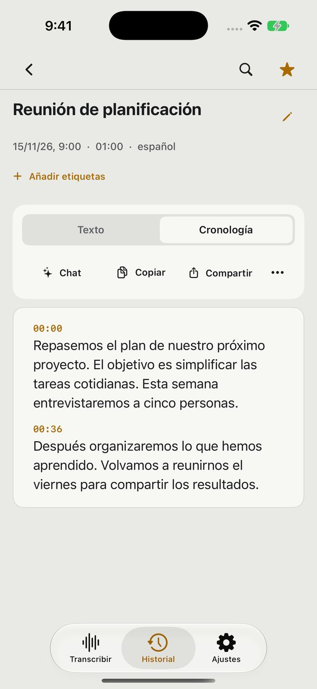
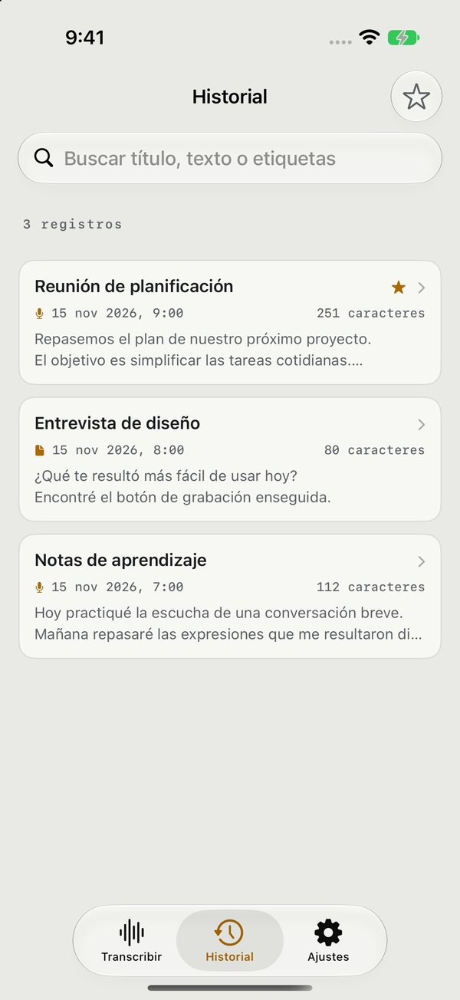
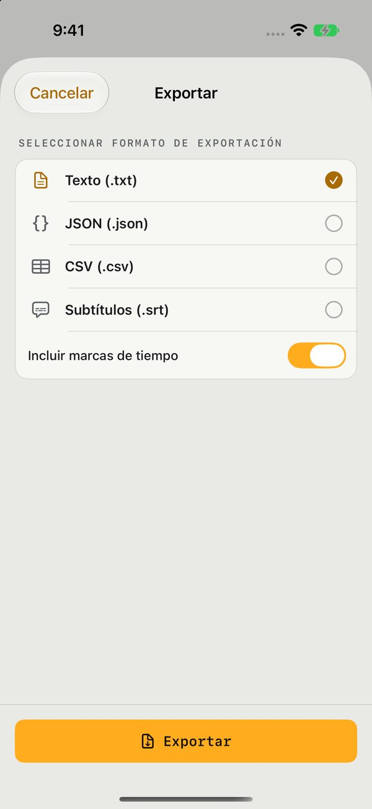

Tu voz,convertida en texto.
Graba una reunión, una clase o una entrevista —o importa un archivo de audio o vídeo— y obtén una transcripción en tu iPhone o iPad.
Transcribe en directo mientras grabas en dispositivos compatibles con iOS 26 o posterior. Con Apple Intelligence activado, pide un resumen con IA en el chat de la transcripción.
- Todas las funciones gratis
- Sin anuncios
- Sin compras dentro de la app
- Sin cuenta
- iPhone y iPad
Todas las funciones, gratis.
No hay ningún plan de pago. Todo lo que aparece en esta página —grabación, importación de archivos, todos los modelos de Whisper, exportaciones, historial, etiquetas, el chat de Apple Intelligence y Atajos— está disponible sin coste. No necesitas crear una cuenta y la app no muestra anuncios.
- Sin suscripción ni pago único
- Sin compras dentro de la app ni funciones bloqueadas
- Sin anuncios ni seguimiento de terceros
- Sin registro ni inicio de sesión
- La app no impone límites a la duración de las grabaciones ni al número de archivos — el almacenamiento, la memoria y la batería del dispositivo siguen influyendo
Del audio a la transcripción
Graba o importa
Toca para grabar con el micrófono o elige un archivo de audio o vídeo desde Archivos o Fotos. Puedes pausar y reanudar mientras grabas.
Lee, edita y exporta
Revisa el texto con marcas de tiempo, corrige los errores y compártelo como TXT, CSV, JSON o subtítulos SRT.
Lo que puedes hacer con la app
Un vistazo más de cerca a las partes principales de la app.
Graba o usa tus propios archivos
Empieza una grabación con un toque o importa algo que ya tengas. La app convierte el audio y lo transcribe en el dispositivo.
- Grabación con micrófono con pausa y reanudación, y un selector de micrófono para micrófonos externos
- Estado de la grabación en la pantalla bloqueada y en la Dynamic Island mediante una Live Activity (en iPhone compatibles)
- Importa audio y vídeo, como M4A, WAV, MP3, MP4 y MOV, desde la app Archivos
- Elige un vídeo directamente de tu fototeca
- Opción «Mantener pantalla encendida» para sesiones largas
Whisper, ejecutándose en tu dispositivo
La app usa los modelos Whisper abiertos de OpenAI a través de whisper.cpp, con aceleración por GPU Metal cuando está disponible. Puedes priorizar la velocidad o la precisión eligiendo otro modelo.
- 10 modelos de Whisper, desde Tiny (unos 15 MB) hasta Large v3 Turbo y Medium (hasta unos 1,5 GB)
- Detección automática del idioma o elección entre 18 idiomas
- Traducción opcional del resultado al inglés
- Descarga opcional del codificador Core ML, que puede acelerar el procesamiento en dispositivos compatibles
- En iOS 26 o posterior, el motor de voz de Apple en el dispositivo también está disponible como alternativa

Vista de línea de tiempo o de lectura
Alterna entre una vista de texto limpia y una línea de tiempo con marcas de tiempo. Reproduce el audio original para comprobar lo que se dijo y corrige el texto cuando haga falta.
- Vista de texto y vista de línea de tiempo, con marcas de tiempo opcionales
- Reproducción de audio con velocidad y posición ajustables
- Edita la transcripción y su título
- Copia un párrafo o todo el texto
- Busca dentro de una transcripción

Un historial con búsqueda
Cada transcripción se guarda en tu dispositivo para que puedas volver a ella más adelante.
- Busca por título, texto o etiqueta
- Favoritos y ordenación
- Etiquetas que puedes añadir, renombrar, combinar y eliminar en todas las transcripciones
- Filtra el historial por etiqueta

Texto, datos o subtítulos
Comparte una transcripción en el formato que mejor encaje con el siguiente paso: notas, una hoja de cálculo, un guion o un editor de vídeo.
- TXT para notas y documentos
- CSV para hojas de cálculo
- JSON con segmentos para tus propias herramientas
- Subtítulos SRT para edición de vídeo
- Comparte la grabación original como archivo de audio
Pregunta sobre una transcripción iOS 26+
En los dispositivos compatibles con Apple Intelligence, puedes conversar con una transcripción —pedir un resumen, las decisiones clave o las tareas pendientes— y generar un título. Los chats se guardan por transcripción. Las transcripciones largas se leen por secciones. El modo opcional Private Cloud Compute (iOS 27 o posterior) está desactivado de forma predeterminada.
Atajos y Siri
Usa los Atajos de la app para iniciar o detener una grabación, transcribir un archivo multimedia, buscar transcripciones, obtener el texto de una transcripción o añadir etiquetas y favoritos; resultan muy prácticos para automatizaciones. Algunas acciones necesitan una versión más reciente de iOS.
Todas las funciones, todas gratis
Una lista completa de lo que ofrece la app actualmente. Nada de esto necesita una compra.
Captura
- Grabación con micrófonoGRATIS
- Pausar y reanudar la grabaciónLa grabación también gestiona interrupciones, como llamadasGRATIS
- Cambiar de micrófonoGRATIS
- Live Activity durante la grabaciónPantalla bloqueada y Dynamic IslandGRATIS
- Importar archivos de audioM4A, WAV, MP3 y otros formatos habitualesGRATIS
- Importar archivos de vídeoMP4, MOV y otros formatos habitualesGRATIS
- Importar vídeo desde FotosGRATIS
- Transcripción en directoEl texto aparece mientras hablas · iOS 26+GRATIS
Reconocimiento de voz
- Whisper en el dispositivo (whisper.cpp)GRATIS
- Los 10 modelos de WhisperTiny, Base, Small, Medium, Large v3 Turbo y variantes compactasGRATIS
- Motor de voz de Apple en el dispositivoiOS 26+; idiomas gestionados por iOSGRATIS
- Detección automática o elección entre 18 idiomasGRATIS
- Traducir al inglésGRATIS
- Aceleración por GPU MetalDonde el dispositivo lo admiteGRATIS
- Codificador Core ML (descarga opcional)GRATIS
Herramientas de precisión y rendimiento
- Omitir secciones silenciosasDetección de actividad de voz (VAD)GRATIS
- Limpieza de audioReducción de ruido y normalización del volumenGRATIS
- Sugerencias de vocabularioNombres y términos que el modelo debe esperarGRATIS
- Flash AttentionPuede reducir el uso de memoria y acelerar el procesamientoGRATIS
- Incluir marcas de tiempoGRATIS
Lectura y edición
- Vista de texto y vista de línea de tiempoGRATIS
- Reproducción de audio con control de velocidadGRATIS
- Editar el texto y el título de la transcripciónGRATIS
- Copiar un párrafo o todo el textoGRATIS
- Buscar dentro de una transcripciónGRATIS
Historial y organización
- Historial de transcripciones guardadoGRATIS
- Búsqueda por título, texto o etiquetaGRATIS
- Favoritos y ordenaciónGRATIS
- Etiquetas: añadir, renombrar, combinar y eliminarGRATIS
- Filtrar por etiquetaGRATIS
Exportación y uso compartido
- Texto (.txt)GRATIS
- CSV (.csv)GRATIS
- JSON (.json)GRATIS
- Subtítulos (.srt)GRATIS
- Compartir el audio originalGRATIS
- Compartir texto con la hoja de compartirGRATIS
Apple Intelligence
- Chat sobre una transcripcióniOS 26+ en dispositivos compatiblesGRATIS
- Historial de chats guardado por transcripciónGRATIS
- Generar un títuloGRATIS
- Modo Private Cloud ComputeOpcional · iOS 27+ · desactivado de forma predeterminadaGRATIS
Automatización y app
- Acciones de Atajos y SiriGRATIS
- Diseños para iPhone y iPadGRATIS
- Apariencia clara, oscura o del sistemaGRATIS
- Interfaz en 11 idiomasGRATIS
- Gestión de modelos y almacenamientoGRATIS
Las funciones marcadas con una versión de iOS necesitan esa versión o una posterior. Las funciones de Apple Intelligence también dependen de la compatibilidad del dispositivo y de la configuración de región e idioma.
Diseñada para que tu audio se quede en tu dispositivo
La transcripción con Whisper se ejecuta de forma local. La app no incluye anuncios, SDK de analítica ni seguimiento de terceros, y no envía tu audio ni tus transcripciones al desarrollador.
Se queda en tu dispositivo
Las grabaciones, el contenido multimedia importado, las transcripciones, las etiquetas, los chats y los ajustes se guardan en la app, en tu dispositivo. Puedes eliminarlos desde la app en cualquier momento.
Cuándo se conecta la app
Para descargar los archivos de los modelos de Whisper, VAD y Core ML desde Hugging Face; para comprobar en el App Store si hay una versión más reciente; y cuando iOS descarga modelos de voz para el motor de Apple.
Tú decides
Private Cloud Compute para Apple Intelligence está desactivado de forma predeterminada. Si lo activas, el texto de la transcripción y tu pregunta se procesan en Private Cloud Compute de Apple. Si compartes una exportación, esta se envía allí donde elijas.
Antes de empezar
Dispositivo y sistema
iPhone o iPad con iOS/iPadOS 17.0 o posterior. La transcripción en directo, el motor de voz de Apple y Apple Intelligence en el dispositivo necesitan iOS 26 o posterior; Private Cloud Compute necesita iOS 27 o posterior.
Almacenamiento y red
Para descargar un modelo hacen falta conexión a internet y espacio libre (entre unos 15 MB y 1,5 GB según el modelo). Para grabar se necesita permiso de micrófono.
Preguntas frecuentes
¿La app es realmente gratis?
Sí. Por ahora todas las funciones son gratuitas. No hay anuncios, ni compras dentro de la app, ni suscripciones, ni registro de cuenta.
¿Funciona sin conexión?
La transcripción con Whisper está diseñada para ejecutarse en tu dispositivo. Necesitas conexión a internet una vez para descargar un modelo; después, grabar y transcribir con ese modelo suele poder hacerse sin conexión. Descargar otros modelos, buscar actualizaciones y el modo opcional Private Cloud Compute necesitan conexión.
¿Se envía mi audio a un servidor?
La transcripción con Whisper se ejecuta de forma local y la app no envía audio ni transcripciones al desarrollador. La única excepción que controlas tú es el modo opcional Private Cloud Compute para el chat de Apple Intelligence, que envía el texto de la transcripción y tu pregunta a Private Cloud Compute de Apple. Está desactivado de forma predeterminada.
¿Qué archivos puedo importar y exportar?
Puedes importar formatos de audio y vídeo habituales como M4A, WAV, MP3, MP4 y MOV desde Archivos, y vídeos desde Fotos. Las transcripciones se pueden exportar como TXT, CSV, JSON o SRT, y las grabaciones se pueden compartir como archivos de audio.
¿Qué idiomas son compatibles?
Para transcribir puedes usar la detección automática o elegir entre inglés, japonés, chino, coreano, español, francés, alemán, italiano, portugués, ruso, árabe, hindi, neerlandés, polaco, turco, vietnamita, tailandés o indonesio. Los resultados pueden variar según el idioma. La interfaz de la app está disponible en 11 idiomas.
¿Puede crear subtítulos para un vídeo?
Sí. Importa un vídeo, transcríbelo y expórtalo como SRT. La mayoría de los editores de vídeo pueden importar archivos SRT. La sincronización de los subtítulos sigue los segmentos reconocidos, así que puede que quieras ajustarla en tu editor.
¿Cuánto puede durar una grabación?
La app no establece un límite fijo. En la práctica, un audio muy largo depende del espacio libre, la memoria y la batería de tu dispositivo, y los modelos más grandes tardan más. Si un archivo largo falla, un modelo más pequeño o Flash Attention pueden ayudar.
¿Es una app oficial de OpenAI?
No. Es una app independiente que ejecuta los modelos Whisper publicados abiertamente por OpenAI a través del proyecto de código abierto whisper.cpp. No está afiliada a OpenAI ni cuenta con su respaldo.